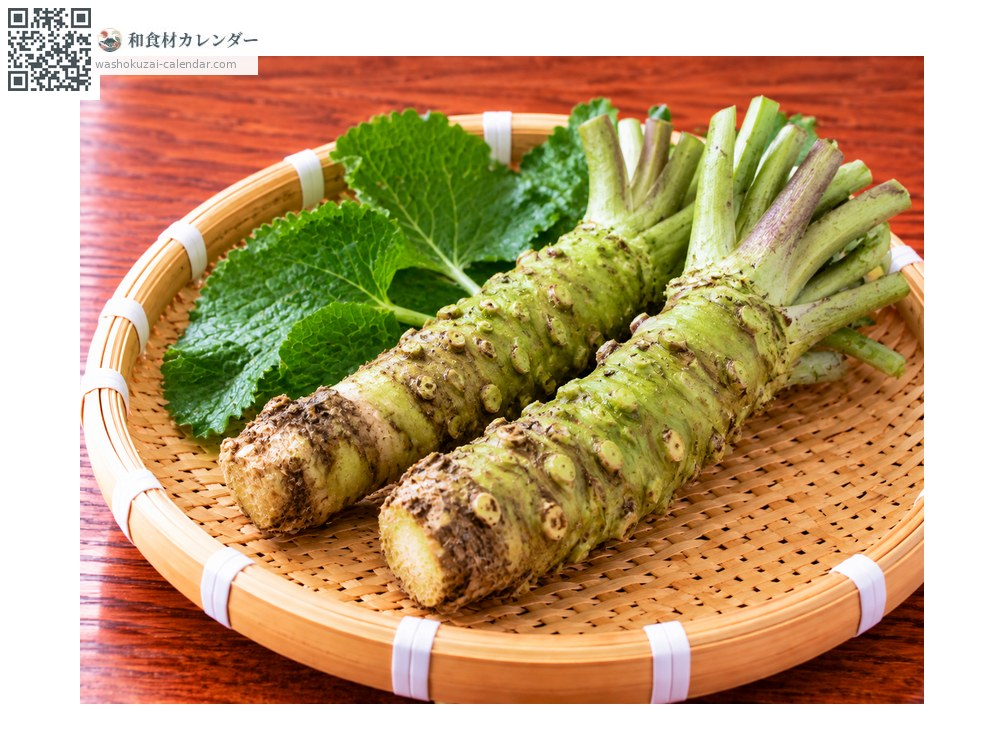
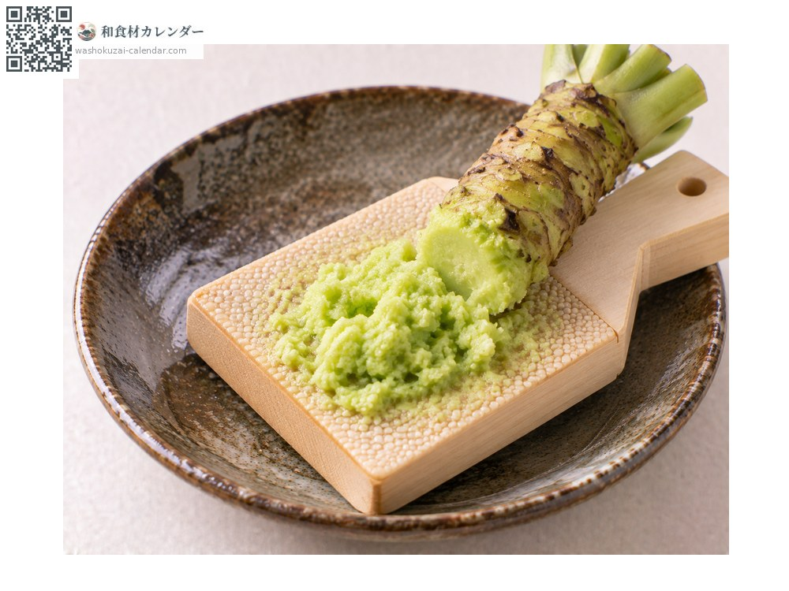
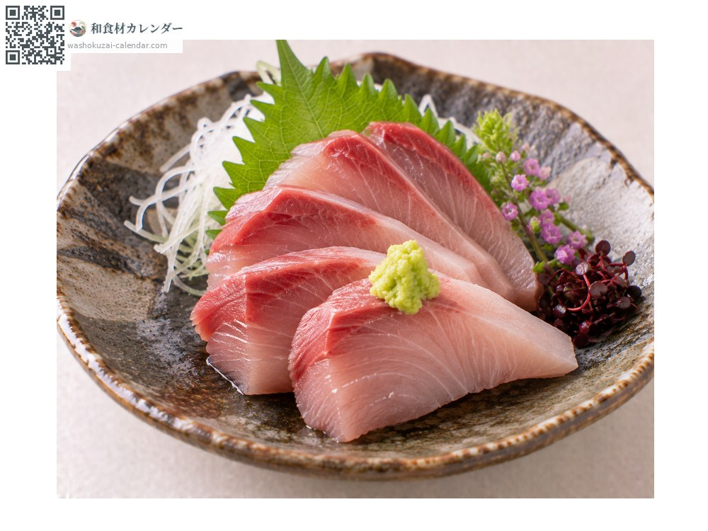
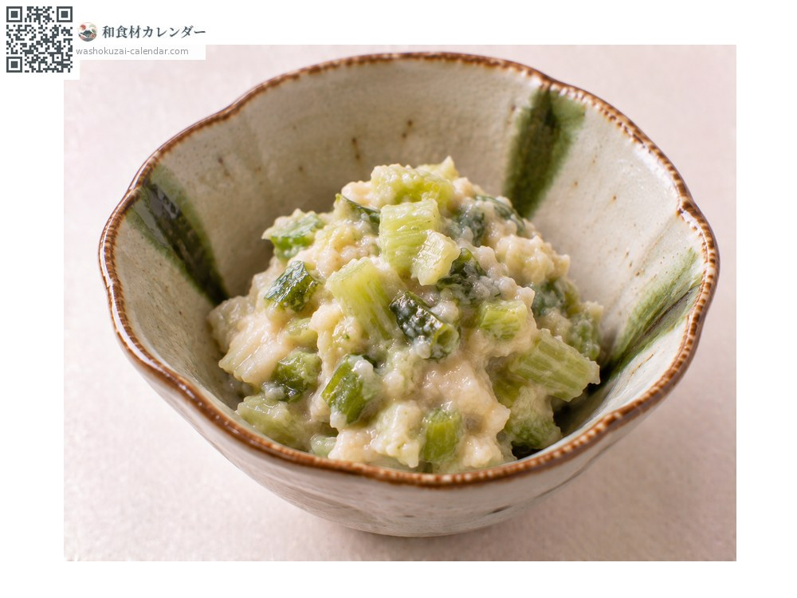
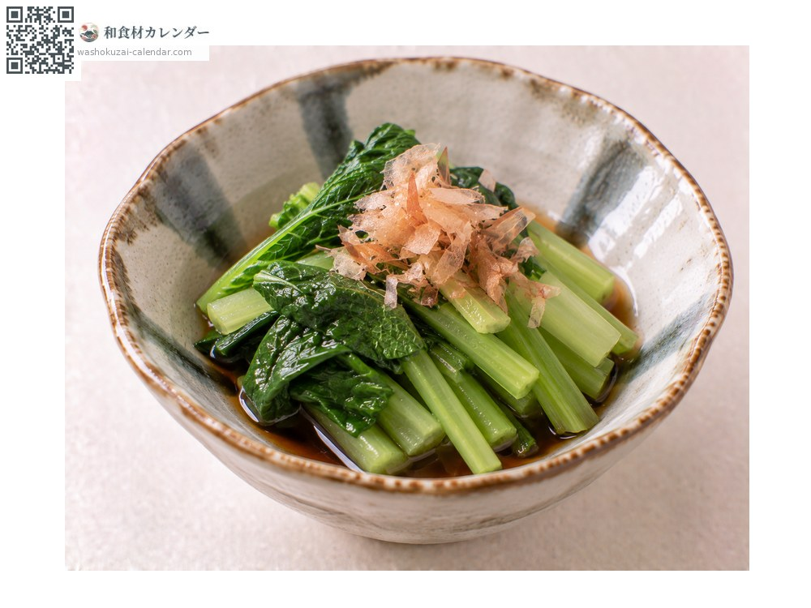

蔬菜
山葵（芥末）
ワサビ わさび wasabi
别名wasabi
应季时期为1月、2月、11月、12月

应季时期
1月
2月
3月
4月
5月
6月
7月
8月
9月
10月
11月
12月
应季有供应
烹饪方法

磨泥
用鲨鱼皮磨板画圆研磨。磨得越细，辣味与香气越明显。

配生鱼片
直接放在鱼肉上，而不是溶进酱油里，香气才不会散失。

山葵渍
把茎和根茎切碎腌进酒粕，配饭或下酒。

叶山葵
叶与茎过热水后密封，能把辣味引出来。
挑选方法
茎的切口呈绿色、根茎的凹凸细密。形状短而粗壮的最好。
保存方法
不耐干燥。用湿纸包好密封冷藏。要用多少磨多少，并保持切口完整。
主要产地
小知识
有在涌泉溪流中栽培的水山葵，以及在旱田栽培的畑山葵。静冈的有东木被视为栽培的发源地。磨好后约五分钟香气最盛，辣味则会随时间消散，所以要在使用前才磨。